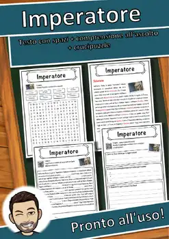
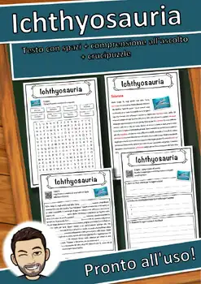
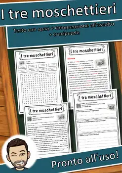
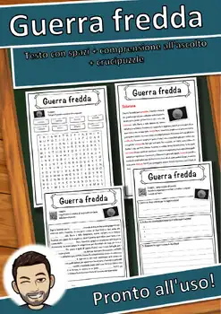
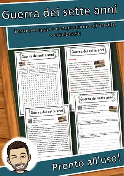
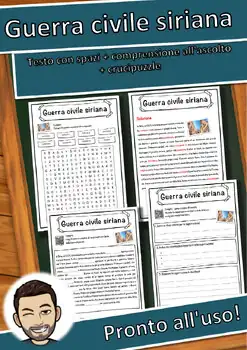
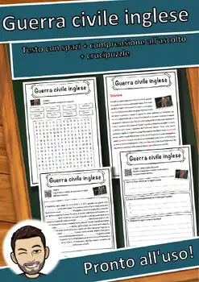

9th Grade History & Society Worksheets
130 History & Society resources for 9th Grade, ready to print: Mosè, Medioevo, Marco Polo, Mantica and more. Each resource page shows the grade range, page count and a preview and links straight to the product on TpT.
130 resources

World War I Reading Comprehension Passages | History Scavenger Hunt 8-9

Art After 1945 BUNDLE | Art History Fact Sheets with Answer Keys

Modern Art Movements BUNDLE | Art History Fact Sheets with Answer Keys

19th-Century Art Movements BUNDLE | Art History Fact Sheets with Answer Keys

Romanesque to Biedermeier Art BUNDLE | Art History Fact Sheets with Answer Keys

Histoire de France – French Reading BUNDLE | Gaul to Versailles Fiches

Antica Roma – Italian Reading Comprehension BUNDLE | Ancient Rome Schede

Mosè – Italian Reading Comprehension Worksheet (Scheda): Cloze & Listening

Medioevo – Italian Reading Comprehension Worksheet (Scheda): Cloze & Listening

Marco Polo – Italian Reading Comprehension Worksheet (Scheda): Cloze & Listening

Mantica – Italian Reading Comprehension Worksheet (Scheda): Cloze & Listening

Malawi – Italian Reading Comprehension Worksheet (Scheda): Cloze & Listening

Magi – Italian Reading Comprehension Worksheet (Scheda): Cloze & Listening

Estia – Italian Reading Comprehension Worksheet (Scheda): Cloze & Listening

Economia – Italian Reading Comprehension Worksheet (Scheda): Cloze & Listening

Coboldo – Italian Reading Comprehension Worksheet (Scheda): Cloze & Listening

Afrodite – Italian Reading Comprehension Worksheet (Scheda): Cloze & Listening

Alabarda – Italian Reading Comprehension Worksheet (Scheda): Cloze & Listening

Panettiere – Italian Reading Comprehension Worksheet (Scheda): Cloze & Listening

Pane – Italian Reading Comprehension Worksheet (Scheda): Cloze & Listening

Palindromo – Italian Reading Comprehension Worksheet (Scheda): Cloze & Listening

Pace – Italian Reading Comprehension Worksheet (Scheda): Cloze & Listening

Orrore – Italian Reading Comprehension Worksheet (Scheda): Cloze & Listening

Oro – Italian Reading Comprehension Worksheet (Scheda): Cloze & Listening

Omero – Italian Reading Comprehension Worksheet (Scheda): Cloze & Listening

Olocausto – Italian Reading Comprehension Worksheet (Scheda): Cloze & Listening

Odino – Italian Reading Comprehension Worksheet (Scheda): Cloze & Listening

Nerone – Italian Reading Comprehension Worksheet (Scheda): Cloze & Listening

Messia – Italian Reading Comprehension Worksheet (Scheda): Cloze & Listening

Licantropo – Italian Reading Comprehension Worksheet (Scheda): Cloze & Listening

La bella addormentata – Italian Reading: Cloze, Listening & Word Search

Invasioni barbariche – Italian Reading: Cloze, Listening & Word Search

Induismo – Italian Reading: Cloze Text, Listening Task & Word Search (Scheda)

Impero spagnolo – Italian Reading: Cloze, Listening & Word Search

Impero ottomano – Italian Reading: Cloze, Listening & Word Search

Impero coloniale tedesco – Italian Reading: Cloze, Listening & Word Search
Impero coloniale francese – Italian Reading: Cloze, Listening & Word Search
Impero britannico – Italian Reading: Cloze, Listening & Word Search

Imperatore – Italian Reading: Cloze Text, Listening Task & Word Search (Scheda)

Ichthyosauria – Italian Reading: Cloze, Listening & Word Search

I tre moschettieri – Italian Reading: Cloze, Listening & Word Search
Guerra del Vietnam – Italian Reading: Cloze, Listening & Word Search
Gustav Stresemann – Italian Reading: Cloze, Listening & Word Search

Guerra fredda – Italian Reading: Cloze, Listening & Word Search
Guerra dei trent'anni – Italian Reading: Cloze, Listening & Word Search

Guerra dei sette anni – Italian Reading: Cloze, Listening & Word Search

Guerra civile siriana – Italian Reading: Cloze, Listening & Word Search

Guerra civile inglese – Italian Reading: Cloze, Listening & Word Search
No resources found – try a different search term or filter.